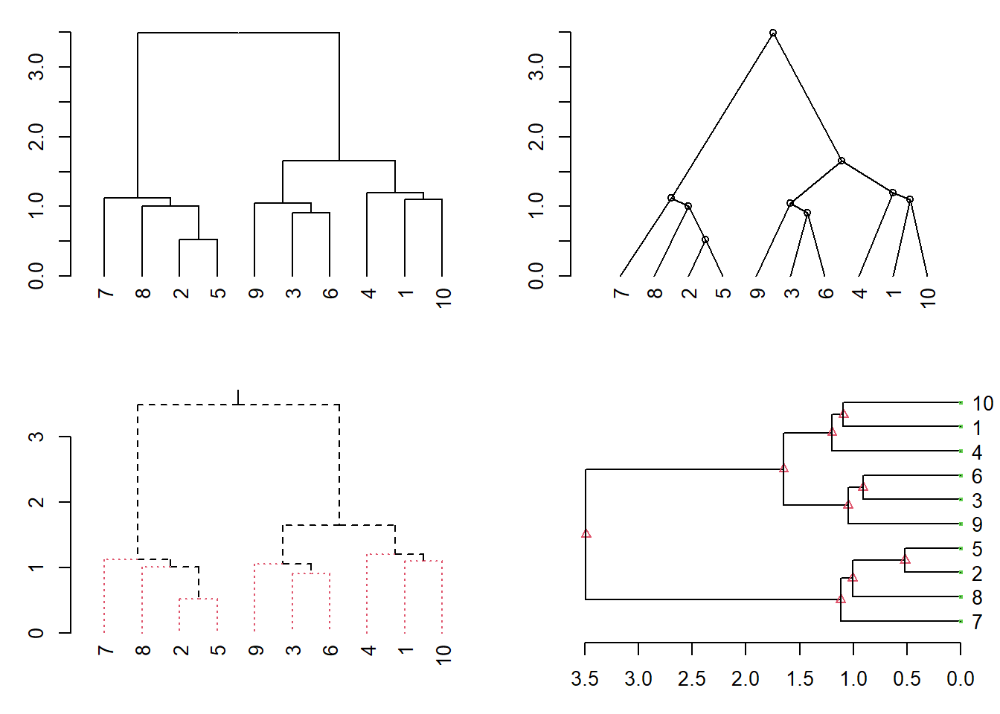

Un procedimiento para estudiar la variabilidad de las observaciones es utilizar el concepto de distancias entre puntos.
En el caso escalar, la distancia entre el valor de una variable x en un punto, \(\Large x_i\), y la media de la variable, \(\Large\bar x\), se mide de manera natural mediante \(\Large \sqrt {(x_i-\bar x)^2}\), equivalentemente \(\Large |xi − x|\) .
La desviación es un promedio de las distancias entre los puntos y su media.
Dados dos puntos \(\Large x_i, x_j\) pertenecientes a \(\Large \mathbb{R}^p\), se establece una distancia, mediante la función d con las propiedades siguientes:
Dados dos puntos en el espacio de dimensión p, la distancia es un número no negativo, \(\Large d(xi, xj) ≥ 0\)
\(\Large d(x_i, x_i) = 0 ,\) la distancia entre un elemento y sí mismo es cero.
\(\Large d(x_i, x_j) = d(x_j , x_i)\), la distancia es una función simétrica en sus argumentos.
Propiedad triángular \(d(x_i, x_j) ≤ d(x_i, x_p) +d(x_p, x_j)\)
La distancia debe verificar que si tenemos tres puntos, la suma de las longitudes de dos lados cualesquiera del triángulo formado por los tres puntos debe siempre ser mayor que el tercer lado.
La norma p, la raíz p-ésima de la suma de las p-ésimas potencias de las diferencias de los componentes.
\[\Large\bigtriangleup_k(x,y)= \bigg\{\sum_{i=1}^{p}|x_j-y_j|^k\bigg\}^{1/k} \]
Es la distancia más popular.
Depende de las unidades de medida de las variables.
La distancia entre los dos puntos \(\large x_r\) y \(x_s\) está definida como:
\[\Large\bigtriangleup_2(x,y)= \bigg\{\sum_{i=1}^{p}|x_j-y_j|^2\bigg\}^{1/2} \]
\[\Large\bigtriangleup_1(x,y)= \sum_{i=1}^{p}|x_j-y_j| \] ##Métrica cuadra de ciudad estandarizada
\[\Large d_{rs}=\frac{1}{p} \sum_{i=1}^{p} \frac{|x_{rj}-x_{sj}|}{R_j} \] Donde \(R_j\) es el rango de la variable j
\[\Large d_{rs}= \frac{\sum_{j=1}^{p}|x_{rj}-x_{sj}|}{\sum_{j=1}^{p}x_{rj}+\sum_{j=1}^{p}x_{sj}} \] ##Métrica de Canberra
\[\Large d_{rs}= \frac{1}{p}\sum_{j=1}^{p} \frac{|x_{rj}-x_{sj}|}{x_{rj}+x_{sj}} \] Esta medida sirve solo para variables positivas
\[\Large\bigtriangleup_\infty (x,y)= \sup|x_j-y_j| \] ##Distancia de mahalanobis Es una medida muy razonable de distancia entre variables correlacionadas.
Se define la distancia de Mahalanobis entre un punto y su vector de medias por
\[\Large\bigtriangleup(x_r,x_s)= \sqrt{(x_r-\bar x_s)^{'}S^{-1}(x_r-\bar x_s)} \]
Donde S es la desviación estándar
Los clusters se van agrupando en clusters mayores, el proceso es repetido a diferentes niveles para formar lo que se conoce técnicamente como un árbol de clusters.
La distancia entre dos clusters, digamos \(C_1\) y \(C_2\), se define como la menor disimilaridad entre un miembro de \(C_1\) y un miembro de \(C_2\), digamos:
\[\Large d_{(C1)(C2)} = mín \quad \{\ d_{rs}|r \quad \varepsilon \quad C_1, \quad S \quad \varepsilon \quad C_2 \}\]
En cada etapa fusionamos los dos clusters que se encuentren más cercanos.
Ejemplo:
La siguiente tabla presenta las mediciones realizadas a 10 estudiantes universitarios de sus pies.
| x1 | x2 | x3 | x4 | x5 |
|---|---|---|---|---|
| 24.2 | 9.4 | 5.5 | 3.0 | 3.2 |
| 21.7 | 8.5 | 6.1 | 3.2 | 2.6 |
| 25.4 | 9.6 | 5.5 | 4.0 | 3.1 |
| 25.0 | 10.1 | 5.3 | 3.5 | 2.7 |
| 22.0 | 8.5 | 5.7 | 3.1 | 2.7 |
| 25.9 | 9.3 | 6.1 | 4.3 | 3.3 |
| 22.2 | 8.6 | 5.2 | 3.9 | 2.9 |
| 21.7 | 8.4 | 5.0 | 3.2 | 2.3 |
| 25.5 | 9.2 | 6.1 | 3.3 | 3.2 |
| 24.4 | 9.4 | 4.7 | 3.6 | 2.8 |
Donde
\(x_1:\) Longitud máxima del pie
\(x_2\): Amplitud máxima del pie
\(x_3:\) Amplitud máxima del talón
\(x_4:\) Longitud máxima del dedo grande
\(x_5:\) Amplitud máxima del dedo grande
Calcule la matriz de las distancias
En R la función dist() es la que estima las distancias entre las filas de una matriz.
Long_pie=c(24.2,21.7,25.4,25,22,25.9,22.2,21.7,25.5,24.4)
amp_pie=c(9.4,8.5,9.6,10.1,8.5,9.3,8.6,8.4,9.2,9.4)
amp_talon=c(5.5,6.1,5.5,5.3,5.7,6.1,5.2,5,6.1,4.7)
lon_dedgran=c(3,3.2,4,3.5,3.1,4.3,3.9,3.2,3.3,3.6)
amp_degran=c(3.2,2.6,3.1,2.7,2.7,3.3,2.9,2.3,3.2,2.8)
datos=data.frame(cbind(Long_pie,amp_pie,amp_talon,lon_dedgran,amp_degran))
#matriz de dist
dist(datos,method = "euclidean")## 1 2 3 4 5 6 7
## 2 2.7964263
## 3 1.5779734 4.0187063
## 4 1.2922848 3.7669616 0.9273618
## 5 2.4392622 0.5196152 3.7121422 3.4467376
## 6 2.2271057 4.4698993 0.9110434 1.7578396 4.2201896
## 7 2.3727621 1.2845233 3.3734256 3.2093613 0.9899495 3.9127995
## 8 2.8896367 1.1445523 4.0816663 3.7576588 0.8717798 4.6765372 1.0862780
## 9 1.4764823 3.9115214 1.0148892 1.4106736 3.6318040 1.0862780 3.5369478
## 10 1.0954451 3.2031235 1.3892444 1.1090537 2.7982137 2.2271057 2.4145393
## 8 9
## 2
## 3
## 4
## 5
## 6
## 7
## 8
## 9 4.1364236
## 10 2.9647934 1.8601075hc <- hclust(dist(datos), "ave")
dend1 <- as.dendrogram(hc)
op <- par(mfrow= c(2,2), mar = c(3,3,1,1))
plot(dend1)
plot(dend1, nodePar=list(pch = c(1,NA),cex=0.8),type = "t", center=TRUE)
plot(dend1, edgePar=list(col = 1:2, lty = 2:3),edge.root = TRUE)
plot(dend1, nodePar=list(pch = 2:1,cex=.4*2:1,col = 2:3), horiz = TRUE)
cutree(hc,k=2)## [1] 1 2 1 1 2 1 2 2 1 1cutree(hc,k=3)## [1] 1 2 3 1 2 3 2 2 3 1by(datos,cutree(hc,k=2),colMeans)## cutree(hc, k = 2): 1
## Long_pie amp_pie amp_talon lon_dedgran amp_degran
## 25.066667 9.500000 5.533333 3.616667 3.050000
## --------------------------------------------------------
## cutree(hc, k = 2): 2
## Long_pie amp_pie amp_talon lon_dedgran amp_degran
## 21.900 8.500 5.500 3.350 2.625